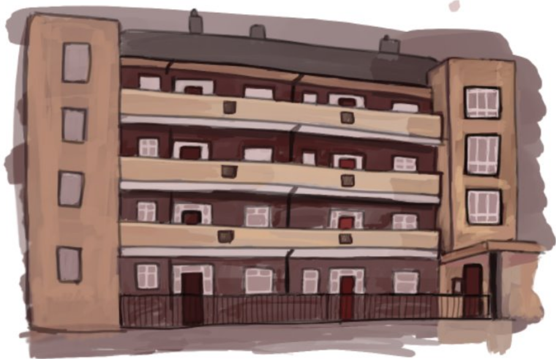
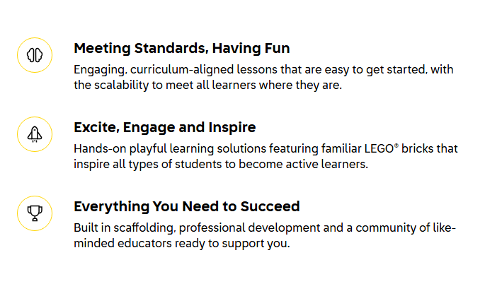
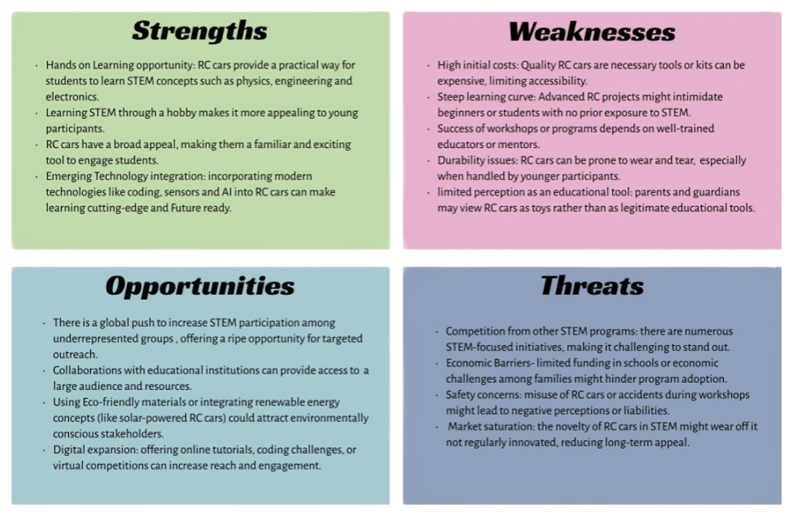
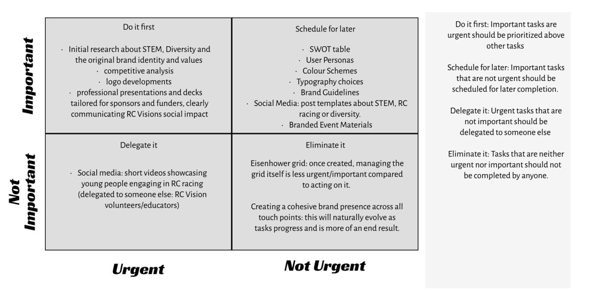

RSA Project:Urban Cool
Brief
To address the growing challenge of urban buildings becoming hotter due to climate change, creating more sustainable homes. This can involve designing homes with energy-efficient materials, incorporating natural ventilation systems, using renewable energy sources like solar power, and integrating green roofs or walls to reduce heat absorption. Smart building technologies, like energy management systems and adaptive shading, can further enhance comfort while lowering energy consumption. These strategies help mitigate urban heat islands and contribute to a more sustainable, livable urban environment.
Developement
i will start my work by researching heat island effect and researching how my idea will work and how it will be funded
Product
my working prototype of my rewards app
What is the urban heat island effect?
Why does it happen?
The sun's heat reaches rural areas in the city in the same way. The difference between these two is how the environments absorb the heat if travelling to a rural area you will see that it is probably covered in lants, plants take up water and store it in there stems and leaves which eventually turn into water vapour and is released into the air and acts as a natural air conditioner
What do urban materials do?
Materials such as asphalt, steel and brick often have dark colours and dark objects absorb all light energy wavelengths and turn it into heat, so the buildings get warm. To cool down urban heat islands cities are lightening the streets by covering them in a grey reflective coating as well as planting gardens on urban rooftops that can help bring down the heat.Many urban building materials are impervious meaning water can't flow through these surfaces and without a cycle of evaporating water these surfaces have nothing to cool them down.
What does it mean?
Urban heat islands are one of the easiest ways to see how human impact can change our planet for the worse. After all, sidewalks, parking lots and skyscrapers wouldn't exist if humans were there to build them. And although these structures are essential to city living, the heat islands they create can be dangerous for humans and harms millions every year and its getting increasingly worse.


Research the effects of plants in cities
There is an effect in cities called the urban heat island effect and according to the Guardian it raises temperatures by around 2-3 degrees because the sun rays are absorbed by the roads roofs and surfaces in the city making it uncomfortable for millions across the globe and causing an increasing number of deaths Some cities are acting based on scientific information and advice and to combat this they have been planting trees in urban areas and replacing tarmac with grass wherever they can, painting buildings white also has been helping cities reflect the sun. Vegetation that also surrounds the city also makes a difference to the temperature in the city center as well, thus increasing parks and more residential areas will not only benefit the environment for the people but It will also reduce the heat generated from Absorbtion. The article by Happy house plants also talks about how plants increase the air quality in houses, but I assume this also is a factor when it comes to air quality for residents in the city itself and reduces humidity, which improves both living quality and the structural integrity of buildings. Adding vegetation to 3D-printed neighborhoods offers many benefits that enhance the environment and the community's well-being. It brightens the area with colour and life, creating inviting spaces that foster connection and life among residents. Environmentally, greenery improves air quality, provides shade to combat urban heat, and supports local biodiversity by attracting wildlife and pollinators. Moreover, green spaces contribute positively to mental health, reducing stress and encouraging outdoor activities which can strengthen the community. Economically, these enhancements can increase property values and attract businesses seeking vibrant, livable rural areas. Ultimately, integrating vegetation is essential for cultivating a healthier, more dynamic urban landscape, that helps both the issue at hand and brings colour and life to the city.
Research other country's taking steps.
Barcelona
Barcelona is fighting against climate change and to do this they are making cooling shelters; Barcelona has started implementing cooling shelters starting from the schools or known in their country as Reufugis cliámtics a les escoles {cooling shelters for schools} as the name implies, they want to put climate adaptation practice in schools first. They received 4 million euros grant and has been carried out from 2019 to 2022. The participants as listed on the website include ''Barcelona City Council, the Barcelona Education Consortium, Barcelona Cicle de l'Aigua SA (BCASA), the Agència de Salut Pública de Barcelona (ASPB), the ICTA-UAB, ISGlobal and the Vila Olímpica school, in addition to other departments within Barcelona City Council such as the Institut Municipal d'Educació [Municipal Institute of Education] (IMEB) and the Energy Agency''. Barcelona city has approved in 2023 of changing part of their factory into a vibrant urban space with a mix of community aspects Aswell as productive functions inside as a part of a superblock plan in the city aimed at revitalizing the greenery in the city, more than half of the Mercades Benz site will be dedicated public space with a third of it reserved for green areas. The central area will be transformed into a social hub while a large urban park with two gardens and a plaza to boast will be created Aswell. The streets will be designed to create vehicle free spaces to encourage walking and cycling.
Biophilic design
Biophilic design is a concept in the building industry to increate occupant connections to the natural environment purpose of this is to create a connection between people and nature. It's about designing living and working environments with the love of nature in mind, it's about finding ways to purposefully create a connection between people and nature when designing buildings, the whole point in biophilic designs is to bring nature inside and outside of your home or buildings. There are specific buildings built with biophilic design in architecture both with interiors and exteriors One of the best places for biophilic design is Singapore: “City in a Garden” boasts a biophilic skyscraper packed with thousands of plants and trees ''gardens by bay'' includes sustainable engineered glass biomes that has trees, designed to harvest solar energy.
Spains Biophilic design
Milians il bosco verticale( the vertical forest) is a new approach to high-rise blocks, in which the architect wanted humans and trees to coexist in an increasingly crowded and polluted city, according to a website dedicated to architecture this provides equivalent greenery without expansion of the city.His vision was to make urban housing that is also an ecosystem improving the quality of life for the residents and city. The vertical forest consists of two residential towers and is covered with over 9000 trees over 500 shrubs and 11000 plants. A massive benefit of Bosco Verticale building is its ability to help improve air quality as well as making the urban environment healthier and regulate the building's temperatures for summer, the trees on the building help retain heat inside for winter acting as natural insulation and providing shade for summer.
Kings' cross redesigns
London's Kings Cross is one of London's largest and most successful redevelopments, what was once an underused industrial site is now squares parks and homes and many more, there are tons of parks and open space in Kings Cross that is traffic free, he creation of car-free zones and traffic-reduced spaces has further supported the environmental goals of the redevelopment. By prioritizing walking and cycling, King's Cross encourages sustainable transport while also reducing emissions. This approach is part of a broader strategy to make the area a model of sustainability,kings cross is a green oasis in the middle of London with its parks and landscaped gardens, with a canal going through the middle splitting it apart, there is 26 acres of open space and seven new parks and squares have been built, over 400 mature trees planted around it Aswell, overall a massive success helping to bring down emissions Aswell as bringing shade and helping with summer heat,its contribution to making London greener, more livable, and more sustainable.
London's own Growth Plan
London has recently implemented several green redesign initiatives throughout London to convert to a more sustainable eco future. These are part of a broader plan to make London a net zero city (which means a city must all together collectively reduce emissions to zero and stop doing practices that generate greenhouse gases) by 2030, focusing on decarbonizing infostructures with improvements to energy efficiency and promoting green transport.
Green finance fund: the mayor of London has launched a 500 million fun to support projects that improve energy efficiency and promote more renewable energy and clean transportation. Earlier projects include solar plans on London stadium and replacing streetlights with LEDs, which is projected to save thousands Tonnes of CO2
Cool streets and green programs: This program targets climate change with green spaces planting more trees in the street and introducing sustainable drainage systems, it also aims to reduce urban overheating by creating shaded routes and heat-resistant trees turning the grey streets of London green biodiverse places.
London green deal: a 10-million-pound initiative focuses on reducing carbon emission while creating thousands of green jobs. This plan introduces decarbonizing homes and supporting small and medium-sized green business enterprises, as well as promoting clean transport solutions like cycling and electric vehicles.
Project Location and my idea
The Location I have chosen to bring my idea to life is London, I was thinking of an area such as Brixton, a city that holds personal significance for me. Growing up in multiple flats which are usually dull and grey, I realize the unique challenges posed by the compact nature of the urban environment. The flat buildings are often tightly packed next to each other this proximity of the buildings creates congestion as well as helps to increase the temperatures in that area through summer, I have developed an ambition to add greenery to these residential areas by incorporating plants in an irrigation system growing on the side of the flats. The idea of integrating plants into the flat goes beyond aesthetic appeal. Urban areas like London are suffering from rising temperatures due to the urban island effect, as I researched. Additionally with pollution levels in London consistently rise and this will also help tackle that issue as plants act as natural air purifiers. I want to use a trickle irrigation system on very easy to incorporate plants such as ivies or wall shrubs and place them on balconies or blank sides of flats and make London a greener and more comfortable place to live. The area I chose is called Tulse hill estate in Brixton which is a housing block, I have chosen this location as there have been demands in the past from residents to improve the way of living in this area with mold growing and roofs decaying and I thought I could give it a entire facelift by adding plants to these buildings which should help with humidity and keeping mold out of these flats, I imagined adding greenery in areas such as this throughout London would help with the heat problems, the flats are not as large as some of the high-rise flat blocks, but I assumed that my idea of running greenery along walls can be enlarged on a larger scale on bigger buildings. This is the demands of the flat block ive chosen for renovations


Sketches of the renovations
I looked on google maps and found an angle that shows the side of the building, and this is used to design this drawing I wanted to show how the plants would look from a side view in an x-ray kind of form of course I would want the plants to scale all sides of the building including the sides and behind.

Research on irrigation systems and vertical gardens
There are many types of vertical gardens ranging from hanging pots to plants growing off a wall or a fence or what I want to use for my idea is a green wall this is also known as a living wall and it’s a self-sufficient garden structure that is attached to a wall and receives moisture by a built-in drip irrigation system instead of soil, this style of vertical planting can be a more expensive option. The way I would tackle watering the plants on the side of the building is a system known as drip irrigation, a drip irrigation system for a living wall doesn't need anything expensive either to run just some tubing's and fitting and a tripper for each pocket of wall. Most living walls can be irrigated very inexpensively with high quality drip irrigation parts and components. This doesn't come with all its benefits as living organisms and unwanted insects can inhabit living walls, but this can easily be counteracted by ladybugs. The diagram on the side explains and shows how the system would work on the wall itself and how it would slowly drip water on the roots of each plant on the wall.
How it functions?
The white lines indicate the pipes that would connect to the water pipe the reason for the tray's underneath is to collect water and for the use of the water to flow in the sections underneath until reaching the last compartment where I wanted any excess water to cycle back up to the water tank using pumps creating an ecosystem that works on its own without much intervention
Low-maintenance plants for vertical gardens.
Acorus Gramineus – Green acorus (fern)
The Acorus genus is native to a wide range of regions in Europe, with Acorus calamus being the most found species in areas like Alicante. For this project, however, the choice was made to use Acorus, a species known for its excellent adaptability to vertical gardens and its resilience during colder periods excellent for England and its harsher winters. This grass typically grows to a maximum height of 35 cm and produces small non noticeable flowers that are not frequently seen. It is slow yet steady, making it a low-maintenance option for gardeners for it not needing to be pruned as often. Caring for Acorus Gramineus is straightforward. Annual pruning is sufficient to manage its growth and ensure the plant remains healthy and compact within the vertical garden. Additionally, it is highly resistant to pests and diseases, making it an ideal choice for environments where maintenance needs to be kept to a minimum, eg the sides of the flats. its ability to thrive in temperate and cooler climate makes it well-suited to urban landscapes, especially for vertical gardens, where space and resources will be limited. It’s a south or west-facing plant however it’s a very sturdy plant being able to be grown in clay and needs full sun which will be all right as I plan on having it on the exterior of the building
Heuchera 'Obsidian' (alum root)
The colour of this plant if black and red and the foliage of its leaves grows all year round, it is an amazing plant for living walls seeing how sturdy it is, the plant can grow with full sun or partial shade Aswell as it can grow facing any side with full or partial sun. To look after this plant its quite simple it only requires a little pruning of the flower stems and dry leaves It does not exceed any higher then 40 cm in height and it forms in a dense clump of leaves making it quite good for being used on green walls.
How will I get funding for the program
Council and Government Grants:
I plan on raising a meeting with the council and government, this won't be too hard due to be the mayor of London who has launched a 10-million-pound fund to support on initiatives that reduce carbon emissions, the plan is to decarbonize homes and support smaller eco companies such as mine. My initiative as a critical step toward reducing carbon emissions and enhancing sustainability in local communities with the urban heat island effect, will focus on presenting how my project fits within the government's agenda for a greener city. The focus will be on the impacts such as how cost- effective this initiative will be well as emphasizing how renovating a unnatractive block of flats both esthetically and environmentally provides many benefits towards both the community and enviroment. These projects could open new job opportunities for sustainable projects that the government is looking for and this could endorse other stakeholders to invest into the program.
Resident Contributions:
Additionally, I plan to advocate for people living in flats and apartments across london by devising an app that will offer tangible benefits for those people living under the roofs of these new renovated flats, this app will operate on a points-based system, like cashback models' shops use, where residents will earn points every month for living there as well as looking after the plants that will be growing on their walls and balconies. These points can be redeemed for discounts and vouchers for transport with trains, buses and other services. This initiative not only incentivises a greener city but also helps the residents living there with cheaper living. There will be funds that I could put into place to help fund this program to benefit all members of London in the future. This addition emphasizes how the app would work as a community-based solution to sustainability while engaging residents.
How will I get funding for the program
Council and Government Grants:
I plan on raising a meeting with the council and government, this won't be too hard due to be the mayor of London who has launched a 10-million-pound fund to support initiatives that reduce carbon emissions, the plan is to decarbonize homes and support smaller eco companies such as mine. My initiative as a critical step toward reducing carbon emissions and enhancing sustainability in local communities with the urban heat island effect, will focus on presenting how my project fits within the government's agenda for a greener city. The focus will be on the impacts such as how cost-effective this initiative will be as well as emphasizing how renovating an unattractive block of flats both aesthetically and environmentally provides many benefits towards both the community and environment. These projects could open new job opportunities for sustainable projects that the government is looking for and this could endorse other stakeholders to invest into the program.
Resident Contributions:
Additionally, I plan to advocate for people living in flats and apartments across London by devising an app that will offer tangible benefits for those people living under the roofs of these new renovated flats, this app will operate on a points-based system, like cashback models' shops use, where residents will earn points every month for living there as well as looking after the plants that will be growing on their walls and balconies. These points can be redeemed for discounts and vouchers for transport with trains, buses and other services. This initiative not only incentivizes a greener city but also helps the residents living there with cheaper living. There will be funds that I could put into place to help fund this program to benefit all members of London in the future. This addition emphasizes how the app would work as a community-based solution to sustainability while engaging residents.
How I get people on board the program
Rewards system app
My idea was to create a rewards app to give people who decide to live in biophilic flats, these rewards would benefit the tenants of these flats with benefits that can be used for travel around London with buses, trains, and parking in London. I also want to seamlessly make it so these points can be converted to an oyster card. I want it to be a more environmental version of cashback when shopping to boost people to want to live in places like this. I also wanted the app accessible to people who aren't living in these flats, with news about other environmental initiatives happening around London as well as any offers going on around London. Logging in and doing an activity the app gives you would give bonus points.
App Logo
Site Map

Low Fidelty and Wireframe
UX design Jakobs law
Jakob's Law is a principle of user experience (UX) design, named after Jakob Nielsen, a well-known usability expert. The law states:
"Users spend most of their time on other websites, so they prefer your site to work the same way as all the other sites they already know."Key Takeaways:
Consistency in design: Users expect websites and apps to follow familiar patterns they've encountered elsewhere. When designers follow standard conventions, it reduces the user's cognitive load, helping them navigate and interact more efficiently. Reduce the learning curve: If a website behaves in unexpected ways, users may become frustrated. By adhering to common design standards, designers can make it easier for users to understand and use the site without needing to relearn new patterns. Familiarity breeds comfort: People are more likely to engage with and trust a site that feels intuitive because it aligns with their past experiences. Following familiar design patterns (like where the navigation bar or search function is placed) enhances the overall user experience.Application in UX:
Designers often apply Jakob's Law by leveraging widely accepted design elements, such as placing navigation menus at the top or on the left side, using consistent icons (like a magnifying glass for search), and following other standard user interface (UI) conventions. This approach helps meet user expectations and improves usability.
In short, Jakob's Law emphasizes designing for user familiarity, ensuring ease of use by following established standards.colour block


conclusion
This is my app prototype in motion it's still in the very early stages but I tried my best to make the outcome look as similar as I could with the wire- frames and include some of the original features I wanted in my original low-fidelity ideas, whilst making the app I thought about adding a section talking about how we use the data collected across the city and from the people living around the city as a piece of mind for the users of the app as I wanted to be transparent through the app with its features and how it works and what it does to benefit the user as it’s a rewards program, the rewards section does not show this yet in the early development of this app but I wanted to increase the contribution by getting extra points for trimming the plants in your section yourself further reducing council costs and giving you a healthy handful of extra points,i think as a whole this app has come together quite nicely and its what i orignally imagined when creating it, if i had more time i would look into other features and accesibilty options to add to the application.
Refrences
RC VISION
Fuelling the future: hands-on STEM education through radio control motorsport.
Project Aims
The aim for this project is to create a coherent brand family that reflects the three parts of RC Vision into a unified visual identity.
This brand identity will be applied across digital platforms (website, social media), print marketing, merchandise, event materials, and awards.
The three parts being:
RC VISION- mother brand and main for social change
King of clubs – A racing series of 1/10 electric cards
Mini Masters- a racing series for 1/12 electric pan cars minis
Project Objectives
Time management (made by arriane)

Inpirations
Marketing campaign for diversity
The section I wanted to focus on from the brief is the conversation around diversity and inclusion in education. The brand I had in mind when I considered this was Coca-Cola. Although it's not directly related to STEM, Coca-Cola has been consistently advocating for diversity and inclusion through its branding and advertisements for many years. In fact, I’ve researched the company’s efforts in this area before and found that they have a strong commitment to representing and including people from diverse backgrounds. My plan is to use this brand as an example to showcase how their dedication to diversity and inclusion could serve as an example, especially within educational environments. By aligning our initiatives with companies like Coca-Cola that prioritize these values, we can demonstrate that creating inclusive spaces could help push forwards diversity in motorsport and across all stem subjects. If we can bridge this gap,highlighting Coca-Cola’s approach and linking it to educational initiatives, we could make a compelling case for embracing diversity and inclusion as foundational values, not only in corporate branding withing the guidlines but also in shaping the future of education.
Coca-Cola Brand Guidlines
The reason I've chosen Coca-Cola, even though it's quite different from RC's vision, is because Coca-Cola has been championing diversity for years. A great example is their Christmas campaign, where they convey the message that anyone can be Santa, showing inclusivity and a broad appeal. I want to incorporate that same spirit into my own storytelling and the logos I create. Additionally, Coca-Cola is known for its consistent and recognizable brand identity. No matter what new drink they release, the logo stays the same, with just small changes in color or composition to represent different aspects of the brand. This approach really speaks to me, and I plan to use a similar idea for RC Vision, where the brand will have four distinct parts, each tied together by a cohesive identity but with its own unique twist.

Cokes typography structure
I really admire how Coca-Cola uses typography throughout their brand. The way they keep it consistent across so many different products really helps tie everything together and makes the entire brand feel cohesive. What stands out to me is how the text is versatile—it can be scaled or adjusted in boldness, but still maintains that strong, recognizable identity. This iconic typeface has become so closely linked with Coca-Cola that it's instantly recognizable in all their advertising and marketing. Whether it's on a bottle, in a commercial, or on a poster, the way they use typography is a key part of their branding. I think it's a great example of how something as simple as type can play such an important role in making a brand feel familiar and timeless, while still allowing for small creative changes. It’s this kind of consistency and flexibility that I’d love to bring into my own branding approach when it comes to wanting to attract a certain audience towards the brand.
Inspirations
LEGO and STEM

What is stem education?
STEM Education at its core simply means educating children in four specific diplines, namley Science,Technologies,Engineering and Maths. instead of learning them individually stem combines all four of these to better equip students for careers outside. Stem Education has really been growing especially when it comes to play.
How does Lego impact stem?
Lego has learned that learning through a play approach is key to drive engagement for both students and teachers according to there statistics on thier website
thier website has the reseach behind it with downloadable results, there research also show that a quater of teachers in the uk belive there children are underpeforming aswell as 60 percent of teachers saying that most studets only have the surface level of understanding on subjects. with a outstanding amount of information showing that 84 percent of students are most ingaged with hand on activites. this is when lego comes in they have workshops that can be booked via there website and not only that they also hold one of the largest stem competitons around stem with different themes on each competition.
Parents can also get involved into stem learning for there children which are sets that inforperate technology which allows the children to program movable lego toys aswell as boxes which only include lego parts which promotes play and creativity, there are also sets which teach kids about science or engineering in a fun way such as the earth sun and moon set which teaches kids the earths rotation whilst also being a buildable kids toy
Swot table and grid (by arriane)
Swot table and grid (by arriane)
Brand developments
These are the fundamental elements of brand development, which I gathered through research from various sources.